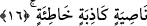

taşıyamasın. Bunun bir çok hikmetleri vardı.
1- Ebû Cehil bir köpekti ve köpek taşınmaz; leşi yerde sürüklenir.
2- Ebû Cehil’in kulağının yarılmasıyla kulağa karşı kulak kısas edilmiş oldu.
3- Âyette “eğer vazgeçmezse onu perçeminden yakalarız” âyetiyle ifâde buyurulan
tehdidin gerçekleşmesidir. Gerçekten İbn Mes’ud bu başı ön tarafından tutarak yerde
sürüklemiştir.
İbn Şeyh’in ifâdesine göre âyette yer alan “nâsiye” alnın üzerindeki saçtır. Bu özel
saça saç anlamına gelen “şa’r” değil de “nasiye” adı verilir. Öte yandan Allah Teâlâ bu
nasiye kelimesiyle kinâye yoluyla yüz ve başı ifâde etmiştir. Yakalanmanın perçemden
yakalanma şeklinde ifâde edilmesi Ebû Cehil’in başının perçemini taramaya ve güzel
koku sürmeye çok özen göstermesindendir.
16. O yalancı, günahkâr alından (perçemden) yakalarız (Cehenneme atarız).
Bu ifâde yukarda geçen “nasiye” kelimesinden bedeldir. “el” takısız nâsiye
kelimesinin marife bir kelimeden bedel getirilmesi câizdir. Çünkü buradaki bedel olan
nasiye kelimesi vasfedilmiş, yalancılık ve günahkarlıkla nitelenmiştir. Aslında yalancı
ve günahkar olan perçem değil, o perçemin sâhibidir. Ancak mecâzî bir isnâdla
yalancılık ve günahkarlık perçeme atfedilmiştir.
Burada “yalancı ve günahkarın perçemi” ifâdesinden daha derin ve geniş bir mânâ
vardır. Âyetin ifâdesine göre kâfir yalancılıkta öyle bir söze, günahkarlıkta öyle bir fiile
ulaşmıştır ki sanki onun perçeminden zuhûr etmiştir. Ebû Cehil “Allah Muhammed’i
peygamber olarak göndermedi” derken Allah’a iftira ediyordu ve “o bir sihirbazdır” ve
benzeri sözleri söylerken yalancı idi. Peygamber Efendimiz’e çeşitli eziyetlerde
bulunurken de günah işliyordu ve bu açıdan günahkardı.
17. O, hemen gidip meclisini (kendi taraftarlarını) çağırsın.
“O” Ebû Cehil “hemen gidip” kendine yardım etmeleri için “meclisini” meclisinde
bulunan kişileri “çağırsın.” Bu meclis Mekkelilerin bir arada toplandıkları meclistir.
Burada “meclisinde bulunanlar” şeklinde tefsir yaparak meclis kelimesinin başına
“muzaaf” getirdik. Çünkü meclisin ve mekanın bizâtihî kendisi çağrılmaz ve mekana
meclis denmez orada meclis ehli bulunmadıkça.
Mekke’deki Daru’n-Nedve üyeleri orada danışmalarda bulunmak için toplanıyorlardı.
Daru’n-Nedve günümüzde gizli toplantı yeridir. Rivâyete göre Ebû Cehil bir gün